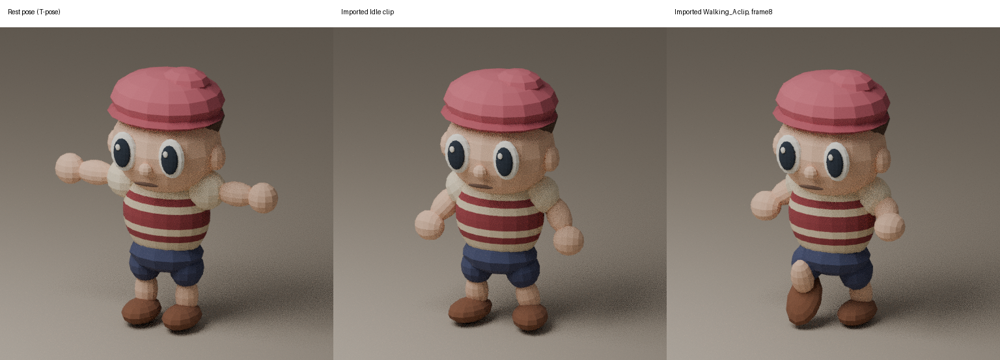
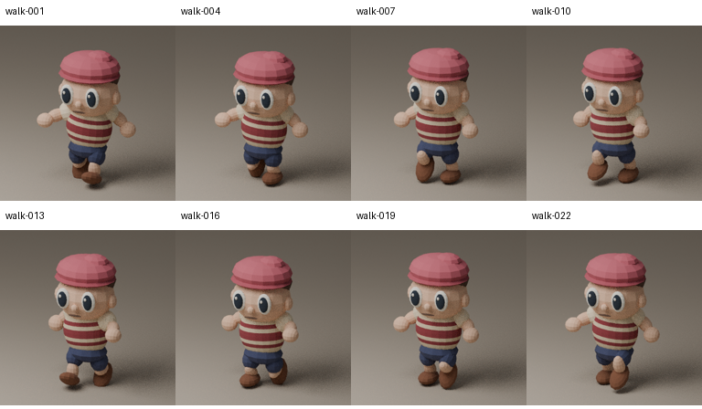
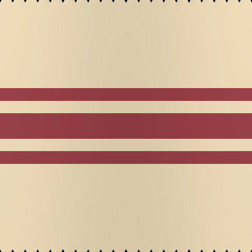
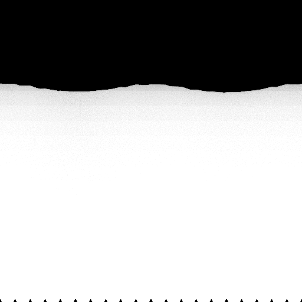

Throwaway tool fixture for decision review. This is the existing authored visitor, not the supplied horned Animal Crossing character.
The CPU bake and GLB reimport kept 41 joints, 76 clips and two embedded 512² maps. A separate actual Blender MCP session selected the walking clip and frame 8. No generation spend; no runtime asset replaced.




The source image is not a finished UV atlas, so these maps are different stages, not an image-quality before/after. This proof does not settle the new character's identity, topology, soft joint deformation, gait or effects.
Baked GLB · Saved Blender fixture · Native transfer evidence · Actual MCP proof · Commands and limits · Sources and hashes